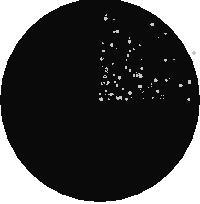

Name
ST_MapAlgebraExpr — 2 raster band version: Creates a new one band raster formed by applying a valid PostgreSQL algebraic operation on the two input raster bands and of pixeltype provided. band 1 of each raster is assumed if no band numbers are specified. The resulting raster will be aligned (scale, skew and pixel corners) on the grid defined by the first raster and have its extent defined by the "extenttype" parameter. Values for "extenttype" can be: INTERSECTION, UNION, FIRST, SECOND.
Synopsis
raster ST_MapAlgebraExpr(raster rast1, raster rast2, text expression, text pixeltype=same_as_rast1_band, text extenttype=INTERSECTION, text nodata1expr=NULL, text nodata2expr=NULL, double precision nodatanodataval=NULL);
raster ST_MapAlgebraExpr(raster rast1, integer band1, raster rast2, integer band2, text expression, text pixeltype=same_as_rast1_band, text extenttype=INTERSECTION, text nodata1expr=NULL, text nodata2expr=NULL, double precision nodatanodataval=NULL);
Description
Creates a new one band raster formed by applying a valid PostgreSQL algebraic operation to the two bands defined by the expression on the two input raster bands rast1, (rast2). If no band1, band2 is specified band 1 is assumed.
The resulting raster will be aligned (scale, skew and pixel corners) on the grid defined by the first raster. The resulting raster will have the extent defined by the extenttype parameter.
- expression
A PostgreSQL algebraic expression involving the two rasters and PostgreSQL defined functions/operators that will define the pixel value when pixels intersect. e.g. (([rast1] + [rast2])/2.0)::integer
- pixeltype
The resulting pixel type of the output raster. Must be one listed in ST_BandPixelType, left out or set to NULL. If not passed in or set to NULL, will default to the pixeltype of the first raster.
- extenttype
Controls the extent of resulting raster
INTERSECTION- The extent of the new raster is the intersection of the two rasters. This is the default.UNION- The extent of the new raster is the union of the two rasters.FIRST- The extent of the new raster is the same as the one of the first raster.SECOND- The extent of the new raster is the same as the one of the second raster.
- nodata1expr
An algebraic expression involving only
rast2or a constant that defines what to return when pixels ofrast1are nodata values and spatially corresponding rast2 pixels have values.- nodata2expr
An algebraic expression involving only
rast1or a constant that defines what to return when pixels ofrast2are nodata values and spatially corresponding rast1 pixels have values.- nodatanodataval
A numeric constant to return when spatially corresponding rast1 and rast2 pixels are both nodata values.
If pixeltype is passed in, then the new raster will have a band of that pixeltype. If pixeltype is passed NULL or no pixel type specified, then the new raster band will have the same pixeltype as the input rast1 band.
Use the term [rast1.val] [rast2.val] to refer to the pixel value of the original raster bands and
[rast1.x], [rast1.y] etc. to refer to the column / row positions of the pixels.
Availability: 2.0.0
Example: 2 Band Intersection and Union
Create a new 1 band raster from our original that is a function of modulo 2 of the original raster band.
--Create a cool set of rasters --
DROP TABLE IF EXISTS fun_shapes;
CREATE TABLE fun_shapes(rid serial PRIMARY KEY, fun_name text, rast raster);
-- Insert some cool shapes around Boston in Massachusetts state plane meters --
INSERT INTO fun_shapes(fun_name, rast)
VALUES ('ref', ST_AsRaster(ST_MakeEnvelope(235229, 899970, 237229, 901930,26986),200,200,'8BUI',0,0));
INSERT INTO fun_shapes(fun_name,rast)
WITH ref(rast) AS (SELECT rast FROM fun_shapes WHERE fun_name = 'ref' )
SELECT 'area' AS fun_name, ST_AsRaster(ST_Buffer(ST_SetSRID(ST_Point(236229, 900930),26986), 1000),
ref.rast,'8BUI', 10, 0) As rast
FROM ref
UNION ALL
SELECT 'rand bubbles',
ST_AsRaster(
(SELECT ST_Collect(geom)
FROM (SELECT ST_Buffer(ST_SetSRID(ST_Point(236229 + i*random()*100, 900930 + j*random()*100),26986), random()*20) As geom
FROM generate_series(1,10) As i, generate_series(1,10) As j
) As foo ), ref.rast,'8BUI', 200, 0)
FROM ref;
--map them -
SELECT ST_MapAlgebraExpr(
area.rast, bub.rast, '[rast2.val]', '8BUI', 'INTERSECTION', '[rast2.val]', '[rast1.val]') As interrast,
ST_MapAlgebraExpr(
area.rast, bub.rast, '[rast2.val]', '8BUI', 'UNION', '[rast2.val]', '[rast1.val]') As unionrast
FROM
(SELECT rast FROM fun_shapes WHERE
fun_name = 'area') As area
CROSS JOIN (SELECT rast
FROM fun_shapes WHERE
fun_name = 'rand bubbles') As bub
 mapalgebra intersection |  map algebra union |
Example: Overlaying rasters on a canvas as separate bands
-- we use ST_AsPNG to render the image so all single band ones look grey --
WITH mygeoms
AS ( SELECT 2 As bnum, ST_Buffer(ST_Point(1,5),10) As geom
UNION ALL
SELECT 3 AS bnum,
ST_Buffer(ST_GeomFromText('LINESTRING(50 50,150 150,150 50)'), 10,'join=bevel') As geom
UNION ALL
SELECT 1 As bnum,
ST_Buffer(ST_GeomFromText('LINESTRING(60 50,150 150,150 50)'), 5,'join=bevel') As geom
),
-- define our canvas to be 1 to 1 pixel to geometry
canvas
AS (SELECT ST_AddBand(ST_MakeEmptyRaster(200,
200,
ST_XMin(e)::integer, ST_YMax(e)::integer, 1, -1, 0, 0) , '8BUI'::text,0) As rast
FROM (SELECT ST_Extent(geom) As e,
Max(ST_SRID(geom)) As srid
from mygeoms
) As foo
),
rbands AS (SELECT ARRAY(SELECT ST_MapAlgebraExpr(canvas.rast, ST_AsRaster(m.geom, canvas.rast, '8BUI', 100),
'[rast2.val]', '8BUI', 'FIRST', '[rast2.val]', '[rast1.val]') As rast
FROM mygeoms AS m CROSS JOIN canvas
ORDER BY m.bnum) As rasts
)
SELECT rasts[1] As rast1 , rasts[2] As rast2, rasts[3] As rast3, ST_AddBand(
ST_AddBand(rasts[1],rasts[2]), rasts[3]) As final_rast
FROM rbands; rast1 |  rast2 |
 rast3 |  final_rast |
Example: Overlay 2 meter boundary of select parcels over an aerial imagery
-- Create new 3 band raster composed of first 2 clipped bands, and overlay of 3rd band with our geometry
-- This query took 3.6 seconds on PostGIS windows 64-bit install
WITH pr AS
-- Note the order of operation: we clip all the rasters to dimensions of our region
(SELECT ST_Clip(rast,ST_Expand(geom,50) ) As rast, g.geom
FROM aerials.o_2_boston AS r INNER JOIN
-- union our parcels of interest so they form a single geometry we can later intersect with
(SELECT ST_Union(ST_Transform(the_geom,26986)) AS geom
FROM landparcels WHERE pid IN('0303890000', '0303900000')) As g
ON ST_Intersects(rast::geometry, ST_Expand(g.geom,50))
),
-- we then union the raster shards together
-- ST_Union on raster is kinda of slow but much faster the smaller you can get the rasters
-- therefore we want to clip first and then union
prunion AS
(SELECT ST_AddBand(NULL, ARRAY[ST_Union(rast,1),ST_Union(rast,2),ST_Union(rast,3)] ) As clipped,geom
FROM pr
GROUP BY geom)
-- return our final raster which is the unioned shard with
-- with the overlay of our parcel boundaries
-- add first 2 bands, then mapalgebra of 3rd band + geometry
SELECT ST_AddBand(ST_Band(clipped,ARRAY[1,2])
, ST_MapAlgebraExpr(ST_Band(clipped,3), ST_AsRaster(ST_Buffer(ST_Boundary(geom),2),clipped, '8BUI',250),
'[rast2.val]', '8BUI', 'FIRST', '[rast2.val]', '[rast1.val]') ) As rast
FROM prunion; The blue lines are the boundaries of select parcels |